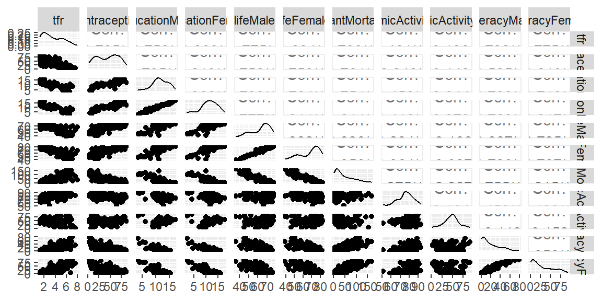
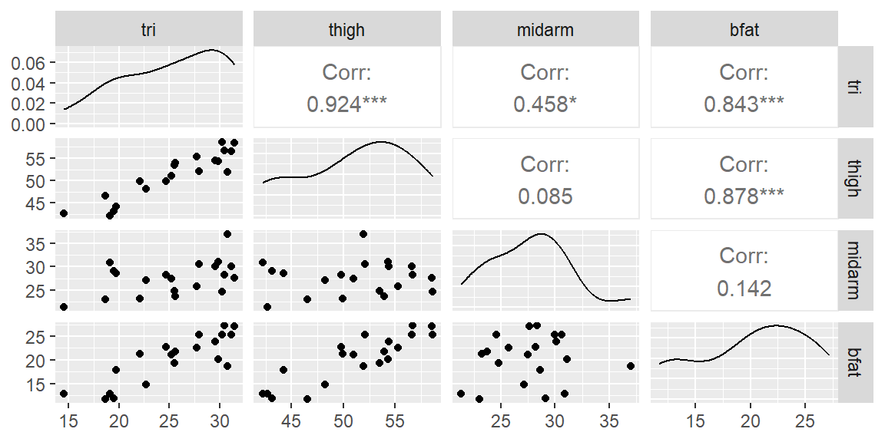
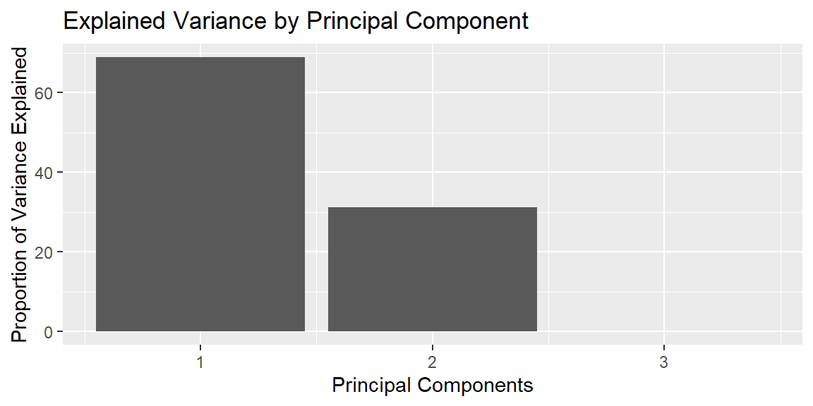
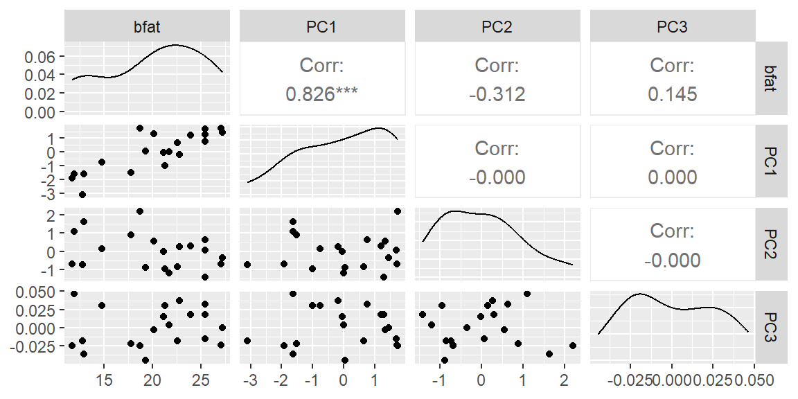

| r_squared_from_other_predictors | vif |
|---|---|
| 0.00 | 1 |
| 0.50 | 2 |
| 0.80 | 5 |
| 0.90 | 10 |
| 0.95 | 20 |
| 0.99 | 100 |
14 Multicollinearity and Principal Component Regression
“The greatest value of a picture is when it forces us to notice what we never expected to see.” - John Tukey
14.1 Multicollinearity
Often, two or more of the independent variables used in the model for \(E(y)\) will contribute redundant information. That is, the independent variables will be correlated with each other.
For example, suppose we want to construct a model to predict the gasoline mileage rating, \(y\), of a truck as a function of its load, \(x_1\), and the horsepower, \(x_2\), of its engine.
In general, you would expect heavier loads to require greater horsepower and to result in lower mileage ratings.
Thus, although both \(x_1\) and \(x_2\) contribute information for the prediction of mileage rating, some of the information is overlapping, because \(x_1\) and \(x_2\) are correlated.
When the independent variables are correlated, we say that multicollinearity exists.
The ability to obtain a good fit or to make inferences on the mean response or to predict the response are not affected by multicollinearity. However, inferences for the coefficients (the \(\beta\)s) and for the model variance (\(\sigma^2\)) are affected by large correlation among the predictor variables.
NoteWhat multicollinearity does and does not do
Multicollinearity is mainly a problem for interpreting individual regression coefficients.
| Goal | Is multicollinearity a major problem? | Why? |
|---|---|---|
| Predicting new responses | Usually no | Correlated predictors can still combine to produce good predictions. |
| Estimating the mean response | Usually no | The fitted mean may still be estimated well in regions supported by the data. |
| Testing individual coefficients | Yes | Standard errors can become inflated, making individual predictors look nonsignificant. |
| Interpreting partial slopes | Yes | Holding one predictor fixed while changing another may be unrealistic when predictors move together. |
| Deciding which variable is “important” | Yes | Correlated predictors share information, so their unique contributions are hard to separate. |
The awkward part is that a model can predict well while still being difficult to interpret.
Another effect of multicollinearity is the interpretation of the estimated coefficients. In multiple regression, we interpret the coefficient as the average change in \(y\) when \(x\) is increased by one unit when all other predictor variables are held constant.
If \(x\) is highly correlated with one or more of the other predictor variables, then it may not be feasible to think of varying \(x\) when the others are constant.
14.1.1 Variance Inflation Factors
We can see evidence of multicollinearity by examining the scatterplot matrix since this will give us a plot of each pair of predictor variables. If there are pairs that appear to be highly correlated (ggpairs in R will give the correlation value as well) then multicollinearity will be present.
We could also examine \(R_{a}^{2}\) for models with and without certain pairs of variables. If \(R_{a}^{2}\) decreases when a particular \(x\) variable is added but it appears to have a strong linear relationship with \(y\) in the scatterplot matrix, then this is evidence of multicollinearity.
A more convenient way to examine multicollinearity is through the use of the variance inflation factors (VIF).
Each predictor variable will have a VIF. Suppose we are interested in the VIF for \(x_{1}\). We start by regressing \(x_{1}\) on all the other predictor variables. Thus, we fit the model \[ \begin{align*} x_{i1} & =\alpha_{0}+\alpha_{2}x_{i2}+\alpha_{3}x_{i3}+\cdots+\alpha_{p-1}x_{i,p-1}+\epsilon \end{align*} \] where the \(\alpha\)’s are the coefficients and \(\epsilon\) is the random error term.
Now find the coefficient of multiple determination for this model which we will denote as \(R_{1}^{2}\). The VIF for \(x_{1}\) is then \[ \begin{align*} VIF_{1} & =\frac{1}{1-R_{1}^{2}}. \end{align*} \] We can do this for any \(i\)th predictor variable so that the VIF for that variable is \[ \begin{align} VIF_{i} & =\frac{1}{1-R_{i}^{2}} \end{align} \tag{14.1}\] where \(R_{i}^{2}\) is the coefficient of multiple determination for the regression fit of \(x_{i}\) on all the other predictor variables.
A rule of thumb is that a VIF greater than 10 is evidence that multicollinearity is high when that variable is added to the model. Some use a cutoff of 5 instead of 10.
ExampleWorked example: Interpreting VIF values
The VIF for predictor \(x_i\) is
\[ VIF_i=\frac{1}{1-R_i^2}, \]
where \(R_i^2\) comes from regressing \(x_i\) on the other predictors. As \(R_i^2\) gets close to 1, the VIF grows quickly.
A VIF of 10 means the estimated variance of a coefficient is 10 times as large as it would be if that predictor were uncorrelated with the other predictors, all else equal. Since standard errors are square roots of variances, this corresponds to a standard error about \(\sqrt{10}\approx 3.16\) times as large.
Example 14.1
ExampleUN98 data and VIF diagnostics
The UN98 data will be used to illustrate VIF diagnostics.
One approach to seeing which variables are correlated with each other is to remove a variable with a large VIF and see which variables had the largest change in their VIF.
We will illustrate this process with the dataset from the library. We will not use the and variables for this example.

# Prepare data
dat_recipe <- recipe(
infantMortality ~ .,
data = UN98
) |>
step_rm(region, GDPperCapita)
# Set up model
lm_model <- linear_reg() |>
set_engine("lm")
# Set up the workflow
lm_workflow <- workflow() |>
add_recipe(dat_recipe) |>
add_model(lm_model)
# Fit the model
lm_fit <- lm_workflow |>
fit(data = UN98)
lm_fit |>
tidy() |>
knitr::kable(digits = 4)| term | estimate | std.error | statistic | p.value |
|---|---|---|---|---|
| (Intercept) | 111.0315 | 48.8599 | 2.2724 | 0.0309 |
| tfr | 12.0410 | 3.8663 | 3.1143 | 0.0042 |
| contraception | -0.0709 | 0.1372 | -0.5172 | 0.6091 |
| educationMale | 5.9823 | 3.1106 | 1.9232 | 0.0647 |
| educationFemale | -6.4092 | 2.7618 | -2.3207 | 0.0278 |
| lifeMale | -0.4054 | 1.1116 | -0.3647 | 0.7181 |
| lifeFemale | -0.7572 | 1.3175 | -0.5747 | 0.5701 |
| economicActivityMale | -0.3827 | 0.2635 | -1.4521 | 0.1576 |
| economicActivityFemale | 0.1722 | 0.1281 | 1.3444 | 0.1896 |
| illiteracyMale | -0.5444 | 0.3924 | -1.3875 | 0.1762 |
| illiteracyFemale | 0.3209 | 0.3130 | 1.0252 | 0.3140 |
lm_fit |>
glance() |>
knitr::kable(digits = 4)| r.squared | adj.r.squared | sigma | statistic | p.value | df | logLik | AIC | BIC | deviance | df.residual | nobs |
|---|---|---|---|---|---|---|---|---|---|---|---|
| 0.9444 | 0.9245 | 9.3962 | 47.5168 | 0 | 10 | -136.249 | 296.498 | 316.4608 | 2472.077 | 28 | 39 |
| variable | VIF |
|---|---|
| tfr | 14.320 |
| contraception | 3.332 |
| educationMale | 23.834 |
| educationFemale | 27.561 |
| lifeMale | 42.279 |
| lifeFemale | 74.708 |
| economicActivityMale | 2.059 |
| economicActivityFemale | 2.049 |
| illiteracyMale | 17.477 |
| illiteracyFemale | 24.356 |
We see that there are a number of variables with high VIF. The highest is lifeFemale. If we remove this variable, what happens to the VIFs of the other variables?
| variable | VIF |
|---|---|
| tfr | 7.650 |
| contraception | 3.152 |
| educationMale | 23.768 |
| educationFemale | 27.547 |
| lifeMale | 6.053 |
| economicActivityMale | 2.041 |
| economicActivityFemale | 1.989 |
| illiteracyMale | 15.271 |
| illiteracyFemale | 20.160 |
We see that removing lifeFemale leads to a couple of the variables having a substantial decrease in their VIFs. The variables tfr and lifeMale both decrease by more than five points when lifeFemale is removed. From the scatterplot matrix above, we see that tfr and lifeMale have the highest correlation with lifeFemale. If we are deciding whether to keep lifeFemale in the model, then we can do so with a practical reason. Are any of the variables that are highly correlated with lifeFemale easier to obtain? If so, we should keep that variable and remove the other.
Let’s now look at the next highest VIF: educationFemale.
| variable | VIF |
|---|---|
| tfr | 14.174 |
| contraception | 3.304 |
| educationMale | 3.426 |
| lifeMale | 42.269 |
| lifeFemale | 74.670 |
| economicActivityMale | 1.899 |
| economicActivityFemale | 2.000 |
| illiteracyMale | 15.192 |
| illiteracyFemale | 18.021 |
We see that educationMale has dropped substantially when educationFemale was removed. Again, deciding which variable to remove from the model is a practical one.
We can continue this process of identifying which variables are highly correlated with other variables.
TipWhat should we do when VIFs are high?
A high VIF is a diagnostic, not an automatic instruction to delete a variable. The next step depends on the purpose of the model.
| Goal | Reasonable response | Caution |
|---|---|---|
| Predict the response | You may keep the correlated predictors if prediction accuracy is good. | The model may still be hard to interpret. |
| Interpret individual coefficients | Consider removing one of the redundant predictors, combining predictors, or using subject-matter judgment to keep the more meaningful variable. | Do not remove variables only because their p-values are large; multicollinearity may be inflating those p-values. |
| Reduce dimension | Use a method such as principal component regression to replace the original predictors with fewer components. | The new predictors are combinations of the original variables, so coefficients become less directly interpretable. |
| Handle many correlated predictors | Consider a regularization method such as ridge regression or lasso. | These methods introduce bias intentionally to improve stability and prediction. |
The key question is not just “Are the VIFs high?” but “What do we need this model to do?”
14.1.2 Effects on Inferences
Recall from Equation 13.3 that we can obtain the variance of the least squares estimators with the diagonal of \({\bf s}^{2}\left[{\bf b}\right]\).
It can be shown that this variance can be expressed in terms of VIF. So the variance of \(b_{j}\) can be expressed as \[ \begin{align} s^{2}\left[b_{j}\right] & =MSE\frac{VIF_{j}}{\left(n-1\right)\widehat{Var}\left[x_{j}\right]} \end{align} \tag{14.2}\] where \(\widehat{Var}\left[x_{j}\right]\) is the sample variance of \(x_j\).
So we see that if \(VIF_{j}\) is large (meaning there is multicollinearity when \(x_{j}\) is included in the model) then the standard error will be larger.
Noting that the test statistic for testing \(\beta_{j}=0\) in Equation 13.5 is \[ \begin{align*} t^{*} & =\frac{b_{j}}{s\left[b_{j}\right]} \end{align*} \]
So an inflated standard error \(s\left[b_{j}\right]\) will lead to a smaller \(t\) and thus a larger p-value. This will cause us to conclude there is not enough evidence for the alternative hypothesis when in fact \(\beta_{j}\ne0\).
14.1.3 Effects on CI and PI for the Response
As stated above, multicollinearity does not affect the confidence interval for the mean response or the prediction interval.
We will illustrate this with the bodyfat data below.
Example 14.2
ExampleBodyfat data and coefficient instability
The bodyfat data from Example 13.1 provide a useful example because the predictors are strongly correlated.
library(tidyverse)
library(tidymodels)
library(car)
library(GGally)
dat <- read_table("BodyFat.txt")
#examine the scatterplot matrix
ggpairs(dat)
We see from this scatterplot matrix, that the predictor variables have some high correlation between them. Thus, we already see that there will be a problem with multicollinearity.
# Prepare data
dat_recipe <- recipe(
bfat ~ tri + thigh + midarm,
data = dat
)
# Set up model
lm_model <- linear_reg() |>
set_engine("lm")
# Set up the workflow
lm_workflow <- workflow() |>
add_recipe(dat_recipe) |>
add_model(lm_model)
# Fit the model
lm_fit <- lm_workflow |>
fit(data = dat)
fit_full <- lm_fit |> extract_fit_engine()
vif_full <- fit_full |> vif()
knitr::kable(
tibble(variable = names(vif_full), VIF = as.numeric(vif_full)),
digits = 3
)| variable | VIF |
|---|---|
| tri | 708.843 |
| thigh | 564.343 |
| midarm | 104.606 |
From VIFs, we see that there is clear multicollinearity between all three variables.
The highest VIF is tri. From the scatterplot matrix above, we see tri is most correlated with thigh. Let’s remove tri and see what happens.
lm_workflow_no_tri <- lm_workflow |>
update_recipe(
dat_recipe |> step_rm(tri)
)
# Fit the model
lm_fit_no_tri <- lm_workflow_no_tri |>
fit(data = dat)
fit_no_tri <- lm_fit_no_tri |> extract_fit_engine()
vif_no_tri <- fit_no_tri |> vif()
knitr::kable(
tibble(variable = names(vif_no_tri), VIF = as.numeric(vif_no_tri)),
digits = 3
)| variable | VIF |
|---|---|
| thigh | 1.007 |
| midarm | 1.007 |
We see that once tri is removed, the remaining variables have small VIFs.
We are not suggesting that tri should definitely be removed. It may still be the best predictor of bfat. There are other ways to determine if only having tri is preferred over a model with just the other two variables. We will discuss those methods later. For now, we do see that multicollinearity will be an issue for these three variables.
To see the effect on the estimated coefficients, let’s look at the standard errors for the model with all three variables and the model without tri.
| model | term | estimate | std.error | statistic | p.value |
|---|---|---|---|---|---|
| Full model | (Intercept) | 117.0847 | 99.7824 | 1.1734 | 0.2578 |
| Full model | tri | 4.3341 | 3.0155 | 1.4373 | 0.1699 |
| Full model | thigh | -2.8568 | 2.5820 | -1.1064 | 0.2849 |
| Full model | midarm | -2.1861 | 1.5955 | -1.3701 | 0.1896 |
| Without tri | (Intercept) | -25.9970 | 6.9973 | -3.7153 | 0.0017 |
| Without tri | thigh | 0.8509 | 0.1124 | 7.5669 | 0.0000 |
| Without tri | midarm | 0.0960 | 0.1614 | 0.5950 | 0.5597 |
Note how much larger the standard errors are for the full model (with multicollinearity) than the model without tri (no multicollinearity).
Larger standard errors will lead to smaller \(t\) statistics and thus larger p-values. So multicollinearity will make variables look like they are insignificant but they really are significant.
Let’s now look at the RMSE (sigma in the glance() function output) which is used in the confidence interval of the mean response and prediction interval formulas.
| model | r.squared | adj.r.squared | sigma | statistic | p.value |
|---|---|---|---|---|---|
| Full model | 0.8014 | 0.7641 | 2.4800 | 21.5157 | 0 |
| Without tri | 0.7757 | 0.7493 | 2.5565 | 29.3978 | 0 |
Note that RMSE is not much different between the two models. It is not affected by multicollinearity. So if all we want to use our model for are estimation of the mean and predictions, then multicollinearity is not an issue. If, however, we want to also determine which variables are important in the estimation and prediction, then multicollinearity is an issue.
14.2 Standardizing Predictor Variables
In linear regression, predictor variables are often transformed to ensure that they are on a comparable scale. This is especially important when predictors have vastly different units or magnitudes, as it can influence the stability and interpretability of the model.
A common technique for transforming predictors is standardization, where each predictor variable is rescaled to have a mean of 0 and a standard deviation of 1. This section will explore the concept of standardization, how it differs from normalization, and the implications for model performance, especially in the context of multicollinearity.
14.2.1 Standardization vs. Normalization
While the terms “standardization” and “normalization” are sometimes used interchangeably, they describe distinct mathematical operations. Standardization transforms a variable \(X\) to have a mean of 0 and a standard deviation of 1, using the following formula:
\[ z_i = \frac{x_i - \bar{x}}{s_x} \]
where \(z_i\) is the standardized value, \(x_i\) is the original value, \(\bar{x}\) is the mean of the variable, and \(s_x\) is its standard deviation. This process ensures that the transformed variable has mean 0 and standard deviation 1. It does not guarantee that the transformed variable follows a normal distribution.
Normalization, on the other hand, typically refers to scaling the data to a specific range, such as [0, 1]. This is done using the formula:
\[ x' = \frac{x_i - \text{min}(x)}{\text{max}(x) - \text{min}(x)} \]
Normalization is most useful when the range of the variables needs to be constrained for certain algorithms, such as in neural networks. In contrast, standardization is generally preferred in linear models, where the focus is on centering and rescaling predictors to ensure interpretability of coefficients.
14.2.2 Why tidymodels Uses the Term “Normalize”
In the tidymodels framework in R, the term “normalize” is used to describe what is technically a standardization process. For example, when creating a preprocessing recipe with the recipe() function, the step called step_normalize() computes the mean and standard deviation of each predictor and scales it accordingly. Although the terminology might be confusing, this usage reflects a common convention in some statistical software where both standardization and normalization are loosely referred to as normalization.
14.2.3 Standardization and Multicollinearity
By scaling all predictors to a common variance, the impact of large magnitude differences between variables is reduced, leading to more stable coefficient estimates. Standardization alone does not reduce correlations between variables. However, it provides numerical stability when using methods other than least squares, making it easier to detect and address multicollinearity issues. When multicollinearity is severe, other techniques, such as principal component regression, may be necessary.
ExampleWorked example: Standardizing does not remove correlation
Standardization changes the scale of the predictors, but it does not change the correlation between them.
bodyfat_predictors <- dat |>
select(tri, thigh, midarm)
bodyfat_standardized <- bodyfat_predictors |>
mutate(across(everything(), ~ as.numeric(scale(.x))))
correlation_compare <- tibble(
pair = c("tri and thigh", "tri and midarm", "thigh and midarm"),
original_correlation = c(
cor(bodyfat_predictors$tri, bodyfat_predictors$thigh),
cor(bodyfat_predictors$tri, bodyfat_predictors$midarm),
cor(bodyfat_predictors$thigh, bodyfat_predictors$midarm)
),
standardized_correlation = c(
cor(bodyfat_standardized$tri, bodyfat_standardized$thigh),
cor(bodyfat_standardized$tri, bodyfat_standardized$midarm),
cor(bodyfat_standardized$thigh, bodyfat_standardized$midarm)
)
)
knitr::kable(correlation_compare, digits = 4)| pair | original_correlation | standardized_correlation |
|---|---|---|
| tri and thigh | 0.9238 | 0.9238 |
| tri and midarm | 0.4578 | 0.4578 |
| thigh and midarm | 0.0847 | 0.0847 |
The correlations are unchanged after standardization. This is why standardization is helpful for scale and numerical stability, but it is not a cure for multicollinearity.
14.3 Principal Component Regression
One effective method for addressing multicollinearity is Principal Component Regression (PCR), which combines Principal Component Analysis (PCA) and linear regression. The key idea behind PCR is to transform the original predictor variables into a smaller set of uncorrelated variables, called principal components (PCs), which capture the most variance in the data.
14.3.1 Introduction to Principal Component Analysis (PCA)
PCA is a dimensionality reduction technique that identifies the directions (called principal components) along which the variation in the data is maximized. These directions are orthogonal to each other and ranked by the amount of variance they capture. The first principal component explains the largest amount of variance in the data, followed by the second principal component, and so on. Each principal component is a linear combination of the original predictor variables.
In practical terms, PCA helps to reduce the dimensionality of the data, making it more manageable without losing too much information. This is particularly useful in cases where the number of predictors is large, and some of them are highly correlated.
ImportantPCA does not know about the response variable
PCA is performed using only the predictor variables. It finds directions that explain variation in the predictors, not directions that necessarily predict the response well.
This means the first few principal components may explain most of the variation in the predictors but may not be the most useful components for predicting \(y\). In practice, the number of components should be chosen using model performance, subject-matter judgment, or a validation procedure, not only by looking at predictor variance.
TipFor those who want to see the math:
Principal components (PCs) are linear transformations of the original predictor variables that aim to capture the maximum variance in the data. Here is a mathematical summary of how these components are computed:
- Standardizing the Data Given a dataset with \(p\) predictors \(x_1, x_2, \dots, x_p\) and \(n\) observations, we first standardize each predictor variable to have mean 0 and standard deviation 1:
\[ z_{ij} = \frac{x_{ij} - \bar{x}_j}{s_j} \]
where: - \(z_{ij}\) is the standardized value of the \(j\)-th predictor for the \(i\)-th observation. - \(\bar{x}_j\) is the mean of the \(j\)-th predictor. - \(s_j\) is the standard deviation of the \(j\)-th predictor.
This step ensures that all variables are on the same scale, which is necessary for PCA.
- Computing the Covariance Matrix Once the data is standardized, we compute the covariance matrix \(\mathbf{S}\) of the standardized predictors:
\[ \mathbf{S} = \frac{1}{n-1} \mathbf{Z}^T \mathbf{Z} \]
where \(\mathbf{Z}\) is the matrix of standardized data with \(n\) rows (observations) and \(p\) columns (predictors).
- Finding Eigenvalues and Eigenvectors We solve the following eigenvalue problem for the covariance matrix \(\mathbf{S}\):
\[ \mathbf{S} \mathbf{v}_j = \lambda_j \mathbf{v}_j \]
where: - \(\lambda_j\) is the \(j\)-th eigenvalue of the covariance matrix. - \(\mathbf{v}_j\) is the corresponding eigenvector (also called the loading vector) associated with \(\lambda_j\).
The eigenvalues \(\lambda_1, \lambda_2, \dots, \lambda_p\) represent the amount of variance explained by each principal component. The eigenvectors define the direction of the new coordinate axes (principal components).
- Constructing the Principal Components The \(j\)-th principal component \(PC_j\) is a linear combination of the original standardized variables:
\[ PC_j = v_{j1} z_1 + v_{j2} z_2 + \cdots + v_{jp} z_p \]
where \(v_{jk}\) is the \(k\)-th element of the eigenvector \(\mathbf{v}_j\).
Each principal component is uncorrelated with the others and explains a decreasing amount of variance. Specifically:
- PC1 (the first principal component) explains the largest possible variance.
- PC2 explains the largest remaining variance subject to being orthogonal to PC1.
- This process continues for all \(p\) components.
- Explained Variance The proportion of the total variance explained by the \(j\)-th principal component is:
\[ \text{Explained Variance of } PC_j = \frac{\lambda_j}{\sum_{k=1}^p \lambda_k} \]
The cumulative variance explained by the first \(m\) components is:
\[ \text{Cumulative Explained Variance} = \frac{\sum_{j=1}^m \lambda_j}{\sum_{k=1}^p \lambda_k} \]
In the context of regression, instead of regressing the response variable on the original set of predictors, we use the principal components as the new predictors. By selecting a subset of the principal components, we can retain most of the variability in the predictors while reducing multicollinearity.
Example 14.3
ExamplePrincipal component regression with the bodyfat data
This example uses the bodyfat data again.
The following steps will illustrate how to apply PCA to the predictors and then use the principal components in a regression model.
pca_recipe <- recipe(bfat ~ ., data = dat) |>
step_normalize(all_predictors()) |>
step_pca(all_predictors(), num_comp = 3)
# Determine the parameters for the recipe steps.
# In this case, we need the mean and standard deviation of each variable
# along with the principal component loadings.
prepped <- pca_recipe |> prep()
# Apply the steps to the data.
pca_data <- prepped |> bake(dat)
# Print the first few principal component rows.
pca_data |>
head() |>
knitr::kable(digits = 4)| bfat | PC1 | PC2 | PC3 |
|---|---|---|---|
| 11.9 | -1.6319 | 1.1008 | 0.0463 |
| 22.8 | -0.1930 | 0.2639 | 0.0375 |
| 18.7 | 1.7293 | 2.1900 | -0.0245 |
| 20.1 | 1.3302 | 0.5470 | -0.0026 |
| 12.9 | -1.6236 | 1.6229 | -0.0363 |
| 21.7 | -0.0051 | -1.1961 | 0.0033 |
The following code provides the principal components derived from the predictors in the BodyFat dataset. Each principal component is a linear combination of the original predictors (tri, thigh, midarm), and they explain the maximum variance in the data.
To visualize how PCA works and to understand the contribution of each principal component, let’s examine the explained variance.
# Extract the PCA results
pca_results <- prepped |> tidy(number = 2, type = "variance")
pca_results |>
knitr::kable(digits = 4)| terms | value | component | id |
|---|---|---|---|
| variance | 2.0665 | 1 | pca_aaKni |
| variance | 0.9328 | 2 | pca_aaKni |
| variance | 0.0007 | 3 | pca_aaKni |
| cumulative variance | 2.0665 | 1 | pca_aaKni |
| cumulative variance | 2.9993 | 2 | pca_aaKni |
| cumulative variance | 3.0000 | 3 | pca_aaKni |
| percent variance | 68.8824 | 1 | pca_aaKni |
| percent variance | 31.0934 | 2 | pca_aaKni |
| percent variance | 0.0242 | 3 | pca_aaKni |
| cumulative percent variance | 68.8824 | 1 | pca_aaKni |
| cumulative percent variance | 99.9758 | 2 | pca_aaKni |
| cumulative percent variance | 100.0000 | 3 | pca_aaKni |

In this plot, we observe the proportion of variance explained by each principal component. The first principal component typically explains the most variance, followed by the second, and so on. Depending on the cumulative proportion of variance explained, we can select an appropriate number of components for our regression model.
Let’s now look at the scatterplot matrix of the PCA data. Note how the correlations between the PCs are zero.
ggpairs(pca_data)
Principal Component Regression is just using these PCs as the predictor variables. We see from above that the third PC does not explain much variability. Thus, we can just use the first two PCs and save a degree of freedom since we will be using one less coefficient in the model.
pcr_recipe <- recipe(bfat ~ ., data = dat) |>
step_normalize(all_predictors()) |>
step_pca(all_predictors(), num_comp = 2)
lm_model <- linear_reg() |>
set_engine("lm")
pcr_workflow <- workflow() |>
add_recipe(pcr_recipe) |>
add_model(lm_model)
pcr_fit <- pcr_workflow |>
fit(data = dat)
pcr_fit |>
tidy() |>
knitr::kable(digits = 4)| term | estimate | std.error | statistic | p.value |
|---|---|---|---|---|
| (Intercept) | 20.1950 | 0.5656 | 35.7071 | 0.0000 |
| PC1 | 2.9358 | 0.4037 | 7.2729 | 0.0000 |
| PC2 | -1.6498 | 0.6008 | -2.7459 | 0.0138 |
Note how small the standard errors are for the coefficients now that we no longer have multicollinearity. Let’s verify that there is no multicollinearity by examining the VIFs.
| variable | VIF |
|---|---|
| PC1 | 1 |
| PC2 | 1 |
Both VIFs are exactly one indicating no multicollinearity.
PCR gives us the ability to still fit the regression model even in the presence of extreme multicollinearity. Another benefit of PCR is that you can also reduce dimensionality by only using the PCs that explain most of the variability. Note that you still need all the original predictor variables since the PCs are linear combinations of these variables. Thus, this is not a method for removing predictor variables. So if our goal is to determine if a variable (that may be difficult or expensive to obtain) can be dropped, then PCR is not the tool we want to use. In addition, in PCR we lose interpretability of the coefficients.
WarningPCR trades interpretation for stability
PCR can reduce multicollinearity because the principal components are uncorrelated. The tradeoff is that the coefficients are no longer slopes for the original predictors. A coefficient for PC1, for example, describes the change in the expected response for a one-unit increase in the first principal component, not a one-unit increase in tri, thigh, or midarm.
This is why PCR is most appealing when prediction or numerical stability matters more than explaining the effect of each original predictor.
NoteBridge to ridge regression
PCR is one way to respond to multicollinearity: it changes the predictors by replacing them with principal components. Ridge regression, discussed in Chapter 19, takes a different approach. It keeps the original predictors in the model but adds a penalty that shrinks coefficient estimates toward 0.
The two approaches answer slightly different needs:
| Method | Basic idea | Main advantage | Main tradeoff |
|---|---|---|---|
| PCR | Replace correlated predictors with uncorrelated components. | Reduces dimension and removes multicollinearity among the components. | Coefficients are for components, not original variables. |
| Ridge regression | Keep the original predictors but shrink their coefficients. | Often improves stability and prediction when predictors are correlated. | Coefficients are biased because shrinkage is intentional. |
Both methods are useful when ordinary least squares becomes unstable, but neither magically answers which original variable is “the one true cause.” That question still requires study design, context, and careful interpretation.
14.4 Recap
In this chapter, we examined what happens when predictors overlap with each other and how principal component regression can address that overlap.
| Idea | Meaning |
|---|---|
| Multicollinearity | Two or more predictors contain redundant information because they are correlated with each other. |
| Partial slope interpretation | A regression coefficient describes the effect of changing one predictor while holding the others fixed. This interpretation becomes awkward when predictors naturally move together. |
| VIF | The variance inflation factor measures how strongly one predictor can be explained by the other predictors. |
| Large VIF | A large VIF indicates that the standard error for that coefficient is inflated because of multicollinearity. |
| Prediction vs. coefficient inference | Multicollinearity may leave prediction performance largely unchanged while making individual coefficient tests unstable. |
| Standardization | Rescaling a predictor to have mean 0 and standard deviation 1. Standardization changes scale, but it does not remove correlation among predictors. |
| PCA | A method that replaces correlated predictors with uncorrelated principal components. PCA focuses on variation in the predictors, not directly on prediction of \(y\). |
| PCR | Principal component regression uses principal components as predictors in a regression model. It can improve stability but reduces direct interpretability. |
| Ridge regression | A regularization method that keeps the original predictors but shrinks coefficients to improve stability. |
14.5 Check your understanding
NoteProblems
Why can a model with severe multicollinearity still make useful predictions?
What does a high VIF tell us about a predictor’s relationship with the other predictors?
Explain why multicollinearity tends to increase p-values for individual coefficient tests.
Why is the phrase “holding all other predictors constant” especially important when discussing multicollinearity?
Does standardizing predictors remove multicollinearity? Explain.
In
tidymodels, why mightstep_normalize()be a confusing name in a regression course?Why does using principal components remove multicollinearity among the transformed predictors?
Why might PCR be a poor choice if the main research goal is to explain the unique effect of each original predictor?
Why might the first principal component not be the best single predictor of the response?
How does ridge regression respond to multicollinearity differently than PCR?
TipSolutions
Prediction uses the combined information in the predictors. If two predictors overlap, the model may still use their shared information to predict the response well. The difficulty is not necessarily prediction; it is separating the unique contribution of each predictor.
The predictor is predictable from the other predictors. A high VIF means that when the predictor is used as a response and regressed on the remaining predictors, the resulting \(R_i^2\) is large. In plain language, the predictor is carrying information that is already present elsewhere in the model.
Inflated standard errors shrink the test statistic. The test statistic for a coefficient divides the estimate by its standard error. Multicollinearity inflates the standard error, which can make the test statistic smaller and the p-value larger, even when the predictor is genuinely related to the response.
Holding correlated predictors constant may be unrealistic. If two predictors usually move together, it may be hard to imagine increasing one while the other stays fixed. That makes the partial slope harder to interpret as a practical effect.
No. Standardizing predictors changes their units so they have mean 0 and standard deviation 1, but it does not change their correlations. Since multicollinearity is about relationships among predictors, standardization alone does not remove it.
It performs standardization. In this chapter’s terminology, standardization means subtracting the mean and dividing by the standard deviation.
step_normalize()does exactly that, even though some courses reserve the word normalization for scaling values to a range such as 0 to 1.Principal components are constructed to be uncorrelated. PCA rotates the original predictor space into new axes that are orthogonal to one another. Since the resulting components do not overlap linearly, their VIFs are 1 when used together in a linear model.
PCR changes the predictors. The model coefficients describe principal components, not the original variables. Because each component is a combination of the original predictors, PCR can improve stability but makes direct statements like “holding
thighandmidarmfixed, a one-unit increase intri…” much harder to make.PCA focuses on the predictors, not the response. The first principal component explains the most variation among the predictors. But the direction with the most predictor variation is not guaranteed to be the direction most related to \(y\).
Ridge keeps the predictors; PCR replaces them. PCR creates uncorrelated principal components and uses those components in the regression model. Ridge regression keeps the original predictors but shrinks the coefficient estimates to make the model more stable when predictors are correlated.